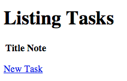

How To Deploy a Rails App with Unicorn and Nginx on Ubuntu 14.04
Introduction
When you are ready to deploy your Ruby on Rails application, there are many valid setups to consider. This tutorial will help you deploy the production environment of your Ruby on Rails application, with PostgreSQL as the database, using Unicorn and Nginx on Ubuntu 14.04.
Unicorn is an application server, like Passenger or Puma, that enables your Rails application to process requests concurrently. As Unicorn is not designed to be accessed by users directly, we will use Nginx as a reverse proxy that will buffer requests and responses between users and your Rails application.
Prerequisites
This tutorial assumes that you have an Ubuntu 14.04 server with the following software installed, on the user that will deploy the application:
If you do not have that set up already, follow the tutorials that are linked above. We will assume that your user is called deploy.
Also, this tutorial does not cover how to set up your development or test environments. If you need help with that, follow the example in the PostgreSQL with Rails tutorial.
Create Rails Application
Ideally, you already have a Rails application that you want to deploy. If this is the case, you may skip this section, and make the appropriate substitutions while following along. If not, the first step is to create a new Rails application that uses PostgreSQL as its database.
This command will create a new Rails application, named "appname" that will use PostgreSQL as the database. Feel free to substitute the highlighted "appname" with something else:
- rails new appname -d postgresql
Then change into the application directory:
- cd appname
Let's take a moment to create the PostgreSQL user that will be used by the production environment of your Rails application.
Create Production Database User
To keep things simple, let's name the production database user the same as your application name. For example, if your application is called "appname", you should create a PostgreSQL user like this:
- sudo -u postgres createuser -s appname
We want to set the database user's password, so enter the PostgreSQL console like this:
- sudo -u postgres psql
Then set the password for the database user, "appname" in the example, like this:
- \password appname
Enter your desired password and confirm it.
Exit the PostgreSQL console with this command:
- \q
Now we're ready to configure the your application with the proper database connection information.
Configure Database Connection
Ensure that you are in your application's root directory (cd ~/appname).
Open your application's database configuration file in your favorite text editor. We'll use vi:
- vi config/database.yml
Under the default section, find the line that says "pool: 5" and add the following line under it (if it doesn't already exist):
host: localhost
If you scroll to the bottom of the file, you will notice that the production section is set the following:
username: appname
password: <%= ENV['APPNAME_DATABASE_PASSWORD'] %>
If your production username doesn't match the database user that you created earlier, set it now.
Note that the database password is configured to be read by an environment variable, APPNAME_DATABASE_PASSWORD. It is considered best practice to keep production passwords and secrets outside of your application codebase, as they can easily be exposed if you are using a distributed version control system such as Git. We will go over how to set up the database authentication with environment variables next.
Install rbenv-vars Plugin
Before deploying a production Rails application, you should set the production secret key and database password using environment variables. An easy way to manage environment variables, which we can use to load passwords and secrets into our application at runtime, is to use the rbenv-vars plugin.
To install the rbenv-vars plugin, simply change to the .rbenv/plugins directory and clone it from GitHub. For example, if rbenv is installed in your home directory, run these commands:
- cd ~/.rbenv/plugins
- git clone https://github.com/sstephenson/rbenv-vars.git
Set Environment Variables
Now that the rbenv-vars plugin is installed, let's set up the required environment variables.
First, generate the secret key, which will be used to verify the integrity of signed cookies:
- cd ~/appname
- rake secret
Copy the secret key that is generated, then open the .rbenv-vars file with your favorite editor. We will use vi:
- vi .rbenv-vars
Any environment variables that you set here can be read by your Rails application.
First, set the SECRET_KEY_BASE variable like this (replace the highlighted text with the secret that you just generated and copied):
SECRET_KEY_BASE=your_generated_secret
Next, set the APPNAME_DATABASE_PASSWORD variable like this (replace the highlighted "APPNAME" with your your application name, and "prod_db_pass" with your production database user password):
APPNAME_DATABASE_PASSWORD=prod_db_pass
Save and exit.
You may view which environment variables are set for your application with the rbenv-vars plugin by running this command:
- rbenv vars
If you change your secret or database password, update your .rbenv-vars file. Be careful to keep this file private, and don't include it any public code repositories.
Create Production Database
Now that your application is configured to talk to your PostgreSQL database, let's create the production database:
- RAILS_ENV=production rake db:create
Generate a Controller
If you are following along with the example, we will generate a scaffold controller so our application will have something to look at:
- rails generate scaffold Task title:string note:text
Now run this command to update the production database:
- RAILS_ENV=production rake db:migrate
Precompile Assets
At this point, the application should work but you will need to precompile its assets so that any images, CSS, and scripts will load. To do so, run this command:
- RAILS_ENV=production rake assets:precompile
Test Application
To test out if your application works, you can run the production environment, and bind it to the public IP address of your server (substitute your server's public IP address):
- RAILS_ENV=production rails server --binding=server_public_IP
Now visit this URL in a web browser:
http://server_public_IP:3000/tasks
If it's working properly, you should see this page:

Go back to your Rails server, and press Ctrl-c to stop the application.
Install Unicorn
Now we are ready to install Unicorn.
An easy way to do this is to add it to your application's Gemfile. Open the Gemfile in your favorite editor (make sure you are in your application's root directory):
- vi Gemfile
At the end of the file, add the Unicorn gem with this line:
gem 'unicorn'
Save and exit.
To install Unicorn, and any outstanding dependencies, run Bundler:
- bundle
Unicorn is now installed, but we need to configure it.
Configure Unicorn
Let's add our Unicorn configuration to config/unicorn.rb. Open the file in a text editor:
- vi config/unicorn.rb
Copy and paste this configuration into the file:
# set path to application
app_dir = File.expand_path("../..", __FILE__)
shared_dir = "#{app_dir}/shared"
working_directory app_dir
# Set unicorn options
worker_processes 2
preload_app true
timeout 30
# Set up socket location
listen "#{shared_dir}/sockets/unicorn.sock", :backlog => 64
# Logging
stderr_path "#{shared_dir}/log/unicorn.stderr.log"
stdout_path "#{shared_dir}/log/unicorn.stdout.log"
# Set master PID location
pid "#{shared_dir}/pids/unicorn.pid"
Save and exit. This configures Unicorn with the location of your application, and the location of its socket, logs, and PIDs. Feel free to modify the file, or add any other options that you require.
Now create the directories that were referred to in the configuration file:
- mkdir -p shared/pids shared/sockets shared/log
Create Unicorn Init Script
Let's create an init script so we can easily start and stop Unicorn, and ensure that it will start on boot.
Create a script and open it for editing with this command (replace the highlighted part with your application name, if you wish):
- sudo vi /etc/init.d/unicorn_appname
Copy and paste the following code block into it, and be sure to substitute USER and APP_NAME (highlighted) with the appropriate values:
#!/bin/sh
### BEGIN INIT INFO
# Provides: unicorn
# Required-Start: $all
# Required-Stop: $all
# Default-Start: 2 3 4 5
# Default-Stop: 0 1 6
# Short-Description: starts the unicorn app server
# Description: starts unicorn using start-stop-daemon
### END INIT INFO
set -e
USAGE="Usage: $0 <start|stop|restart|upgrade|rotate|force-stop>"
# app settings
USER="deploy"
APP_NAME="appname"
APP_ROOT="/home/$USER/$APP_NAME"
ENV="production"
# environment settings
PATH="/home/$USER/.rbenv/shims:/home/$USER/.rbenv/bin:$PATH"
CMD="cd $APP_ROOT && bundle exec unicorn -c config/unicorn.rb -E $ENV -D"
PID="$APP_ROOT/shared/pids/unicorn.pid"
OLD_PID="$PID.oldbin"
# make sure the app exists
cd $APP_ROOT || exit 1
sig () {
test -s "$PID" && kill -$1 `cat $PID`
}
oldsig () {
test -s $OLD_PID && kill -$1 `cat $OLD_PID`
}
case $1 in
start)
sig 0 && echo >&2 "Already running" && exit 0
echo "Starting $APP_NAME"
su - $USER -c "$CMD"
;;
stop)
echo "Stopping $APP_NAME"
sig QUIT && exit 0
echo >&2 "Not running"
;;
force-stop)
echo "Force stopping $APP_NAME"
sig TERM && exit 0
echo >&2 "Not running"
;;
restart|reload|upgrade)
sig USR2 && echo "reloaded $APP_NAME" && exit 0
echo >&2 "Couldn't reload, starting '$CMD' instead"
$CMD
;;
rotate)
sig USR1 && echo rotated logs OK && exit 0
echo >&2 "Couldn't rotate logs" && exit 1
;;
*)
echo >&2 $USAGE
exit 1
;;
esac
Save and exit. This will allow you to use service unicorn_appname to start and stop your Unicorn and your Rails application.
Update the script's permissions and enable Unicorn to start on boot:
- sudo chmod 755 /etc/init.d/unicorn_appname
- sudo update-rc.d unicorn_appname defaults
Let's start it now:
- sudo service unicorn_appname start
Now your Rails application's production environment is running under Unicorn, and it's listening on the shared/sockets/unicorn.sock socket. Before your application will be accessible to an outside user, you must set up the Nginx reverse proxy.
Install and Configure Nginx
Install Nginx using apt-get:
- sudo apt-get install nginx
Now open the default server block with a text editor:
- sudo vi /etc/nginx/sites-available/default
Replace the contents of the file with the following code block. Be sure to replace the the highlighted parts with the appropriate username and application name:
upstream app {
# Path to Unicorn SOCK file, as defined previously
server unix:/home/deploy/appname/shared/sockets/unicorn.sock fail_timeout=0;
}
server {
listen 80;
server_name localhost;
root /home/deploy/appname/public;
try_files $uri/index.html $uri @app;
location @app {
proxy_pass http://app;
proxy_set_header X-Forwarded-For $proxy_add_x_forwarded_for;
proxy_set_header Host $http_host;
proxy_redirect off;
}
error_page 500 502 503 504 /500.html;
client_max_body_size 4G;
keepalive_timeout 10;
}
Save and exit. This configures Nginx as a reverse proxy, so HTTP requests get forwarded to the Unicorn application server via a Unix socket. Feel free to make any changes as you see fit.
Restart Nginx to put the changes into effect:
- sudo service nginx restart
Now the production environment of your Rails application is accessible via your server's public IP address or FQDN. To access the Tasks controller that we created earlier, visit your application server in a web browser:
http://server_public_IP/tasks
You should see the same page that you saw the first time you tested your application, but now it's being served through Nginx and Unicorn.
Conclusion
Congratulations! You have deployed the production environment of your Ruby on Rails application using Nginx and Unicorn.
If you are looking to improve your production Rails application deployment, you should check out our tutorial series on How To Use Capistrano to Automate Deployments. The series is based on CentOS, but it should still be helpful in automating your deployments.
93 Comments